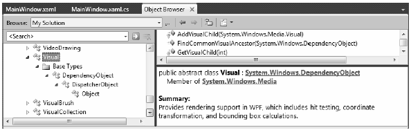
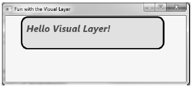
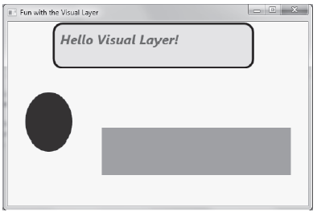

The final option for rendering graphical data with WPF is termed the visual layer. As mentioned, you can only gain access to this layer through code (it is not XAML-friendly). While a vast majority of your WPF applications will work just fine using shapes, drawings, and geometries, the visual layer does provide the fastest possible way to render huge amounts of graphical data. Oddly, this very low-level graphical layer can also be useful when you need render to single image over a very large area. For example, if you need to fill the background of a window with a plain static image, the visual layer will be the fastest way to do so, and it may be useful if you need to change between window backgrounds very quickly, based on user input or whatnot.
While we won’t spend too much time delving into the details of this aspect of WPF programming, let’s build a small sample program that illustrates the basics.
The abstract System.Windows.Media.Visual class type supplies a minimal set of services (rendering, hit testing, transformations) to render graphics, but it does not provide support for additional non-visual services, which can lead to code bloat (input events, layout services, styles, and data binding). Notice the simple inheritance chain of the Visual type, as shown in Figure 29-21.
Figure 29-21 The Visual type provides basic hit testing, coordinate transformation, and bounding box calculations
Given that Visual is an abstract base class, we need to use one of the derived types to perform actual rendering operations. WPF provides a handful of subclasses, including DrawingVisual, Viewport3DVisual, and ContainerVisual.
In this example, we will focus only on DrawingVisual, a lightweight drawing class that is used to render shapes, images, or text.
To render data onto a surface using a DrawingVisual, you need to take the following basic steps:
These two steps represent the bare minimum necessary for rendering some data to a surface. However, if you want the graphical data you’ve rendered to be responsive to hit-testing calculations (which would be important for adding user interactivity), you will also need to perform these additional steps:
We will examine these final two steps in a bit. First, to illustrate how you can use the DrawingVisual class to render 2D data, create a new WPF application with Visual Studio named RenderingWithVisuals. Our first goal is to use a DrawingVisual to dynamically assign data to a WPF Image control. Begin by updating the XAML of your window like so:
<Window x:Class="RenderingWithVisuals.MainWindow" xmlns="http://schemas.microsoft.com/winfx/2006/xaml/presentation" xmlns:x="http://schemas.microsoft.com/winfx/2006/xaml" Title=" Fun with the Visual Layer" Height="350" Width="525" Loaded="Window_Loaded" WindowStartupLocation="CenterScreen"> <StackPanel Background="AliceBlue" Name="myStackPanel"> <Image Name="myImage" Height="80"/> </StackPanel> </Window>
Notice that our <Image> control does not yet have a Source value, as that will happen at runtime. Also notice that we are handling the Loaded event of the window, which will do the work of building the in-memory graphical data, using a DrawingBrush object. Here is the implementation of the Loaded event handler:
private void Window_Loaded(object sender, RoutedEventArgs e) { const int TextFontSize = 30; // Make a System.Windows.Media.FormattedText object. FormattedText text = new FormattedText("Hello Visual Layer!", new System.Globalization.CultureInfo("en-us"), FlowDirection.LeftToRight, new Typeface(this.FontFamily, FontStyles.Italic, FontWeights.DemiBold, FontStretches.UltraExpanded), TextFontSize, Brushes.Green); // Create a DrawingVisual, and obtain the DrawingContext. DrawingVisual drawingVisual = new DrawingVisual(); using(DrawingContext drawingContext = drawingVisual.RenderOpen()) { // Now, call any of the methods of DrawingContext to render data. drawingContext.DrawRoundedRectangle(Brushes.Yellow, new Pen(Brushes.Black, 5), new Rect(5, 5, 450, 100), 20, 20); drawingContext.DrawText(text, new Point(20, 20)); } // Dynamically make a bitmap, using the data in the DrawingVisual. RenderTargetBitmap bmp = new RenderTargetBitmap(500, 100, 100, 90, PixelFormats.Pbgra32); bmp.Render(drawingVisual); // Set the source of the Image control! myImage.Source = bmp; }
This code introduces a number of new WPF classes, which I will briefly comment on here (be sure to check the .NET Framework 4.0 SDK documentation for full details if you are interested). The method begins by creating a new FormattedText object that represents the textual portion of the in-memory image we are constructing. As you can see, the constructor allows us to specify numerous attributes such as font size, font family, foreground color, and the text itself.
Next, we obtain the necessary DrawingContext object via a call to RenderOpen() on the DrawingVisual instance. Here, we are rendering a colored, rounded rectangle into the DrawingVisual, followed by our formatted text. In both cases, we are placing the graphical data into the DrawingVisual using hard-coded values, which is not necessarily a great idea for production, but fine for our simple test.
Note Be sure to look up the DrawingContext class within the .NET Framework 4.0 SDK documentation to view all rendering members. If you have worked with the Windows Forms Graphics object in the past, DrawingContext should look very similar.
The last few statements map the DrawingVisual into a RenderTargetBitmap object, which is a member of the System.Windows.Media.Imaging namespace. This class will take a visual object, and transform it into an in-memory bitmap image. After this point, we set the Source property of the Image control, and sure enough, we see the output in Figure 29-22.
Figure 29-22 Using the visual layer to render an in-memory bitmap
Note The System.Windows.Media.Imaging namespace contains a number of additional encoding classes that let you save the in-memory RenderTargetBitmap object to a physical file in a variety of formats. Check out the JpegBitmapEncoder class (and friends) for more information.
While it is interesting to use DrawingVisual to paint onto the background of a WPF control, it is perhaps more common to build a custom layout manager (Grid, StackPanel, Canvas, etc) that uses the visual layer internally to render its content. Once you have created such a custom layout manager, you can plug it into a normal Window (or Page, or ) and have a part of the UI using a highly optimized rendering agent, while the non-critical aspects of the hosting Window use shapes and drawings for the remainder of the graphical data.
If you don’t require the extra functionality provided by a dedicated layout manager, you could opt to simply extend FrameworkElement, which does have the necessary infrastructure to also contain visual items. To illustrate how this could be done, insert a new class to your project named CustomVisualFrameworkElement. Extend this class from FrameworkElement and import the System.Windows, System.Windows.Input and System.Windows.Media namespaces.
This class will maintain a member variable of type VisualCollection, which contains two fixed DrawingVisual objects (of course, you could add new members to this collection via a mouse operation, but this example will keep it simple). Update your class with the following new functionality:
class CustomVisualFrameworkElement : FrameworkElement { // A collection of all the visuals we are building. VisualCollection theVisuals; public CustomVisualFrameworkElement() { // Fill the VisualCollection with a few DrawingVisual objects. // The ctor arg represents the owner of the visuals. theVisuals = new VisualCollection(this); theVisuals.Add(AddRect()); theVisuals.Add(AddCircle()); } private Visual AddCircle() { DrawingVisual drawingVisual = new DrawingVisual(); // Retrieve the DrawingContext in order to create new drawing content. using (DrawingContext drawingContext = drawingVisual.RenderOpen()) { // Create a circle and draw it in the DrawingContext. Rect rect = new Rect(new Point(160, 100), new Size(320, 80)); drawingContext.DrawEllipse(Brushes.DarkBlue, null, new Point(70, 90), 40, 50); } return drawingVisual; } private Visual AddRect() { DrawingVisual drawingVisual = new DrawingVisual(); using (DrawingContext drawingContext = drawingVisual.RenderOpen()) { Rect rect = new Rect(new Point(160, 100), new Size(320, 80)); drawingContext.DrawRectangle(Brushes.Tomato, null, rect); } return drawingVisual; } }
Now, before we can use this custom FrameworkElement in our Window, we must override two key virtual methods mentioned previously, both of which are called internally by WPF during the rendering process. The GetVisualChild() method returns a child at the specified index from the collection of child elements. The read-only VisualChildrenCount property returns the number of visual child elements within this visual collection. Both methods are easy to implement, as we can delegate the real work to the VisualCollection member variable:
protected override int VisualChildrenCount { get { return theVisuals.Count; } } protected override Visual GetVisualChild(int index) { // Value must be creater than zero, so do a sainity check. if (index < 0 || index >= theVisuals.Count) { throw new ArgumentOutOfRangeException(); } return theVisuals[index]; }
We now have just enough functionality to test our custom class. Update the XAML description of the Window to add one of your CustomVisualFrameworkElement objects to the existing StackPanel. Doing so will require you to build a custom XML namespace that maps to your .NET namespace (see Chapter 28):
<Window x:Class="RenderingWithVisuals.MainWindow" xmlns="http://schemas.microsoft.com/winfx/2006/xaml/presentation" xmlns:x="http://schemas.microsoft.com/winfx/2006/xaml" xmlns:custom="clr-namespace:RenderingWithVisuals" Title="Fun with the Visual Layer" Height="350" Width="525" Loaded="Window_Loaded" WindowStartupLocation="CenterScreen"> <StackPanel Background="AliceBlue" Name="myStackPanel"> <Image Name="myImage" Height="80"/> <custom:CustomVisualFrameworkElement/> </StackPanel> </Window>
If all is well, you should see something similar to Figure 29-23 when you run your program.
Figure 29-23 Using the visual layer to render data to a custom FrameworkElement
Because DrawingVisual does not have any of the infrastructure of UIElement or FrameworkElement, you will need to programmatically add in the ability to calculate hit-test operations. Thankfully, this is fairly easy to do in the visual layer because of the concept of logical and visual trees. As it turns out, when you author a blob of XAML, you are essentially building a logical tree of elements. However, behind every logical tree is a much richer description known as the visual tree, which contains lower-level rendering instructions.
Chapter 32 will delve into these trees in more detail but for now, just understand that until you register your custom visuals with these data structures, you will not be able to perform hit-testing operations. Luckily, the VisualCollection container does this on your behalf (which explains why we needed to pass in a reference to the custom FrameworkElement as a constructor argument).
First, update the CustomVisualFrameworkElement class to handle the MouseDown event in the class constructor using standard C# syntax:
this.MouseDown += MyVisualHost_MouseDown;
The implementation of this handler will call the VisualTreeHelper.HitTest() method to see if the mouse is within the boundaries of one of the rendered visuals. To do this, we specify as a parameter to HitTest(), a HitTestResultCallback delegate that will perform the calculations. If we did click on a visual, we will toggle between a skewed rendering of the visual and the original rendering. Add the following methods to your CustomVisualFrameworkElement class:
void MyVisualHost_MouseDown(object sender, MouseButtonEventArgs e) { // Figure out where the user clicked. Point pt = e.GetPosition((UIElement)sender); // Call helper function via delegate to see if we clicked on a visual. VisualTreeHelper.HitTest(this, null, new HitTestResultCallback(myCallback), new PointHitTestParameters(pt)); } public HitTestResultBehavior myCallback(HitTestResult result) { // Toggle between a skewed rendering and normal rendering, // if a visual was clicked. if (result.VisualHit.GetType() == typeof(DrawingVisual)) { if (((DrawingVisual)result.VisualHit).Transform == null) { ((DrawingVisual)result.VisualHit).Transform = new SkewTransform(7, 7); } else { ((DrawingVisual)result.VisualHit).Transform = null; } } // Tell HitTest() to stop drilling into the visual tree. return HitTestResultBehavior.Stop; }
Now, run your program once again. You should now be able to click on either rendered visual and see the transformation in action! While this is just a very simple example of working with the visual layer of WPF, remember that you make use of the same brushes, transformations, pens, and layout managers as you would when working with XAML. As a result, you already know quite a bit about working this Visual derived classes.
Source Code The RenderingWithVisuals project can be found under the Chapter 29 subdirectory.
That wraps up our investigation of the graphical rendering services of Windows Presentation Foundation. While we covered a number of interesting topics, the reality is that we have only scratched the surface of WPF’s graphical capabilities. I will leave it in your hands to dig deeper into the topics of shapes, drawings, brushes, transformations, and visuals (and, to be sure, you will see some additional details of these topics in the remaining WPF chapters).